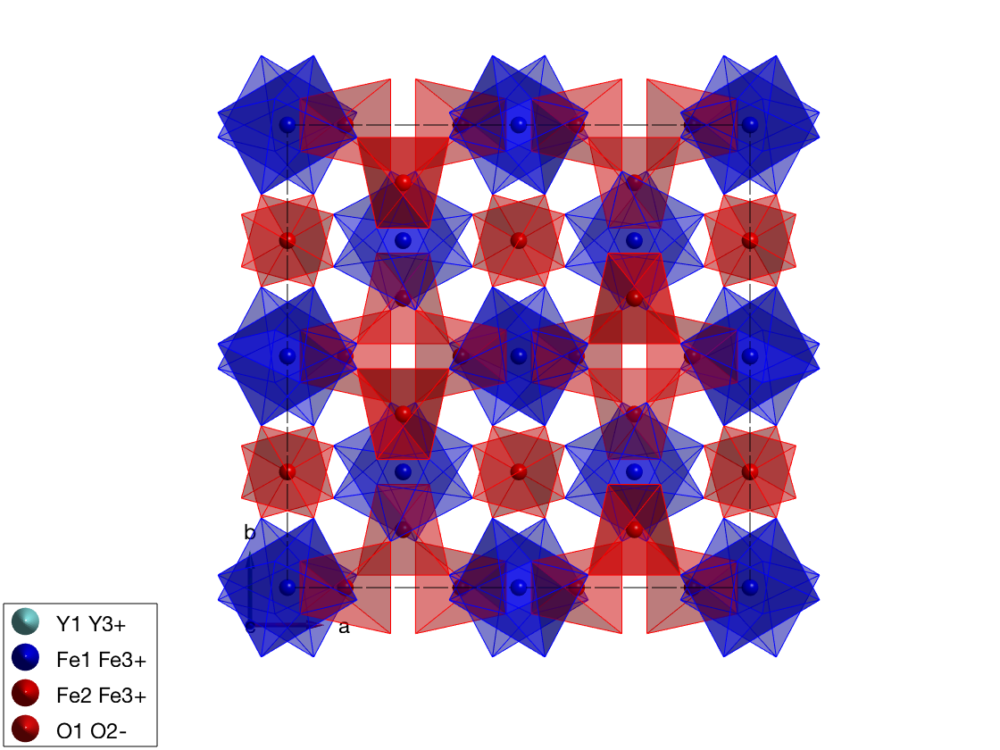
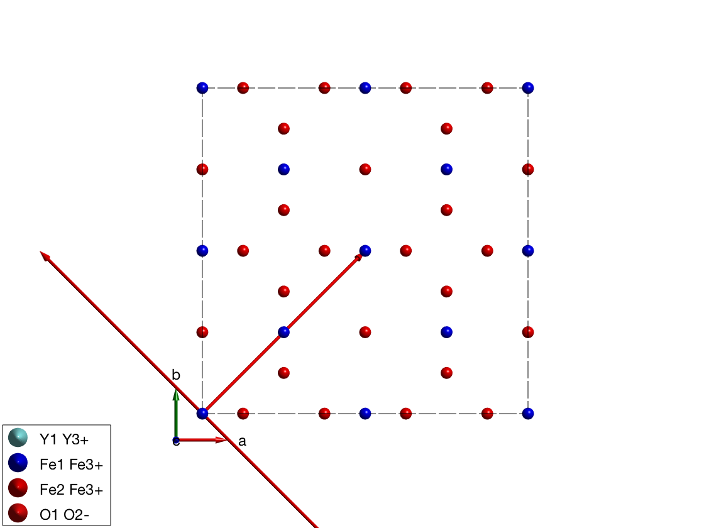
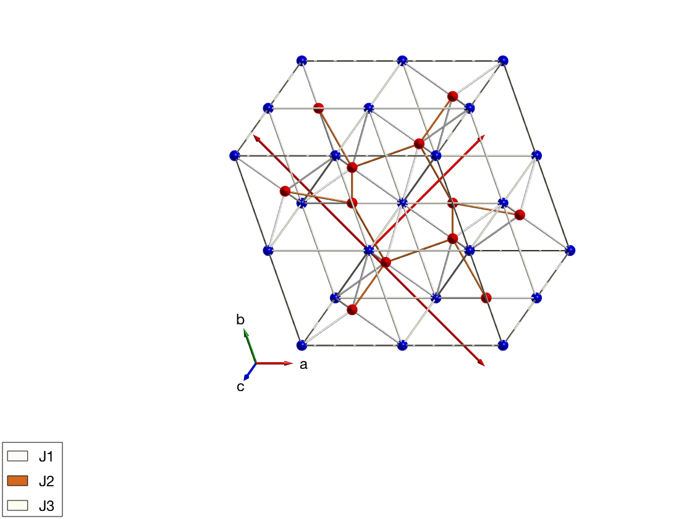

Description
This script calculates the low temperature spin dynamics of yttrium iron garnet (YIG) to compare with the recently published calculation of J. Baker and G. E. W. Bauer, PRL 117, 217201 (2016). The published calculation is based on a classical spin dynamics described by the Landau-Lifshitz-Gilbert equation and a numerical integration in time. This method can be used to calculate spin dynamics at finite temperature. On the other hand SpinW can calculate the spin wave spectrum by diagonalizing the spin Hamiltonian that should be identical to the classical solution up to a finite zero point energy shift at low temperatures. Here we reproduce the low temperature spectrum to compare with the classical results of the paper.
Contents
Importing and plotting the YIG crystal
We get the crystal structure of YIG from a .cif file stored online. SpinW is able to download the file from a given link and create the crystal structure.
yig = spinw('https://goo.gl/kQO0FJ'); % The imported .cif file contains all symmetry operators of its space % group. SpinW will determine the generators of the space group and stores % them in the yig.lattice.sym matrix that has dimensions of 3x4xnOp. Where % the yig.lattice.sym(:,1:3,i) is the rotation operator of the ith symmetry % operator, while the yig.lattice.sym(:,4,i) is the corresponding % translation vector. The imported structure assigns automatically % different colors for different atoms, thus the same color for the two Fe % sublattice. Here we color differently the two sublattice: yig.unit_cell.color(:,3) = swplot.color('red'); yig.unit_cell.color(:,2) = swplot.color('blue'); % spin quantum number of Fe3+ ions, determined automatically by SpinW S0 = max(yig.unit_cell.S); % normalize spins to S=1 as it is in the paper yig.unit_cell.S = yig.unit_cell.S/S0; hFig = plot(yig,'atomMode','mag'); swplot.plotchem('atom1','Fe1','atom2','O','limit',6) swplot.plotchem('atom1','Fe2','atom2','O','limit',4,'replace',false)
Show the primitive cell
plot(yig,'atomMode','mag') % new basis vectors in rows pBV = [1/2 1/2 -1/2;-1/2 1/2 1/2;1/2 -1/2 1/2]; % lattice constant of YIG lat = yig.abc(1); swplot.plot('type','arrow','position',cat(3,zeros(3),pBV'))
Generate the bonds using centered cell
An interesting symmetry property of YIG in the "I a -3 d" space group is that the bonds type 3 and type 4 have the exact same length, however they are not related by symmetry. This can be easily seen by checking the center psition of the bonds:
yig.gencoupling('maxDistance',6); yig.getmatrix('bond',3); yig.getmatrix('bond',4); % The (7/8,1/8,1/8) position belongs to the 48g Wyckoff position, while the % (7/8,7/8,7/8) position is 16b. Thus the exchange interactions on the two % bonds can be different, even though previous models of YIG assumed they % are equal.
The symmetry analysis of the coupling between atom 7 and atom 2:
lattice translation vector: [-1,0,0]
distance: 5.350 Angstrom
center of bond (in lattice units): [0.875,0.625,0.375]
allowed elements in the symmetric matrix:
S = | A|-B| B|
|-B| A|-B|
| B|-B| A|
allowed components of the Dzyaloshinskii-Moriya vector:
D = [ D1,-D1,D1 ]
The symmetry analysis of the coupling between atom 6 and atom 2:
lattice translation vector: [0,-1,0]
distance: 5.350 Angstrom
center of bond (in lattice units): [0.625,0.875,0.375]
allowed elements in the symmetric matrix:
S = | D |-0.42421A+0.19428B|-0.42421A+0.19428B|
|-0.42421A+0.19428B| A+B | C |
|-0.42421A+0.19428B| C | A+B |
allowed components of the Dzyaloshinskii-Moriya vector:
D = [ D1, D2,D2 ]
Create spin Hamiltonian
change from BCC to primitive cubic cell
T = yig.newcell({pBV(1,:) pBV(2,:) pBV(3,:)});
% exchange values from the paper
Jad = sw_converter(9.60e-21,'J','THz','photon');
Jdd = sw_converter(3.24e-21,'J','THz','photon');
Jaa = sw_converter(0.92e-21,'J','THz','photon');
% scale the interactions from classical moment size to quantum model
Scl = sqrt(S0*(S0+1));
yig.quickham([Jad Jdd Jaa]/Scl)
% add external field and convert from the standard SpinW unit (meV) to THz
yig.field([0 0 0.01]*sw_converter(1,'meV','THz','photon'))
yig.optmagsteep('nRun',1e4)
yig.genmagstr('mode','rotate','n',[0 0 1])
if sum(yig.mag_str.F(3,:),2)<0
yig.mag_str.F = -yig.mag_str.F;
end
plot(yig,'atomMode','mag','atomLegend',false,'baseShift',[-5;-5;0])
swplot.zoom(0.6)
Warning: Convergence was not reached!
Spin wave dispersion to compare with the paper
To compare the results to the paper we extract the imaginary part of the spin-spin correlation function.
Q0 = T*[1 2 3]';
Q_N = T*[ 1/2 1/2 0]'+Q0;
Q_G = T*[ 0 0 0]'+Q0;
Q_H = T*[ 0 0 1]'+Q0;
qLabel = {'N' 'G' 'H'};
spec = yig.spinwave({Q_N Q_G Q_H 501});
spec = sw_egrid(spec,'component','Sxy-Syx','Evect',linspace(0,28,501));
spec = sw_instrument(spec,'dE',0.75);
figure
sw_plotspec(spec,'mode','disp','colormap',[0 0 0])
hold on
sw_plotspec(spec,'mode','color','imag',true,'qLabel',qLabel)
colormap(sw_cbrewer('RdBu'))
title('YIG low temperature spin wave spectrum')
ylabel('Energy (THz)')
legend off
colorbar off
caxis([-0.05 0.05])
Error using sw_egrid (line 345) The imaginary part of the spin wave energes is larger than the bin size! Improve your calculation or disable imagChk option! Error in tutorial21 (line 107) spec = sw_egrid(spec,'component','Sxy-Syx','Evect',linspace(0,28,501));
Written by Sandor Toth 06-Feb-2017